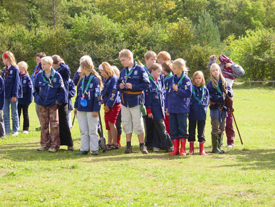

At DDS, we work from the scout idea that was founded by Lord BADEN-POWELL in England over 100 years ago! Does that sound boring? - It is not!!! We do not only use maps and compasses to find our way. It's easier with GPS. We have learned the second thing. We do not always follow old ladies across the road, we would rather go for long walks, make bonfires, toast marshmallows, build with rafters, sing, dance, play, get crazy ideas and try them out, cuddle in the sleeping bag, laugh, giggle, scout tease.

